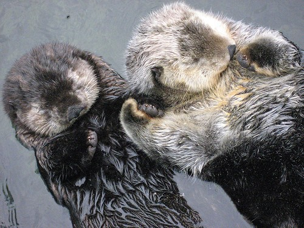

쓰다보니 너무 편지 어떻게 만들었나 이야기만 했네 ㅋㅋㅋ
헤헤 그래 마지막 사진은 내가 좋아하는 손잡고 자는 수달 사진을 넣어봤어
저 사진 볼때마다 우리 같다는 생각하는데 ㅋㅋㅋ
같이 손잡고 어디론가 떠내려가는...
내사랑 연아아
매번 하는 얘기지만, 덕분에 매일 매일이 행복해.
일하면서 가끔 어려움 있어도 든든한 내편 내꺼가
무조건 내가 잘했다고, 안아주고 위로해줄거 생각하면
가끔 느끼는 너무 무겁고 도망가고 싶은 마음도 서서히 사라져
그니까, 아프지 말구 행복하게!
언제까지고 옆에만 있어줘, 알았지?? 헤헤
딴거 바라는거 없다아아!
연아, 멀리 멀리 있다 생각하니 더 보고싶다 ㅠㅜ
오늘도 정말 고생 많았어! 내일이면 볼 수 있다 생각하니
월요병도 없을 거 같애 ㅋㅋㅋ
헤헤 이만 줄여야겠다. 내사랑 조심해서 올라와!!
이전 페이지로!